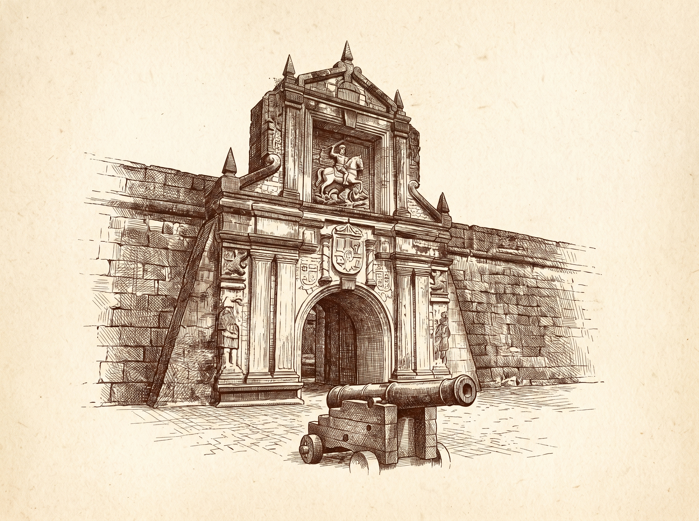
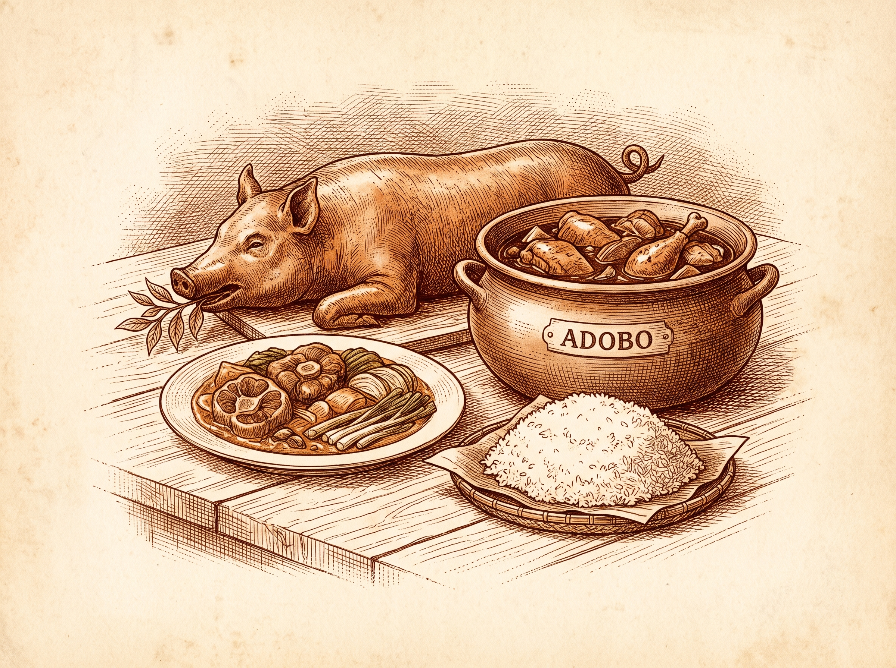
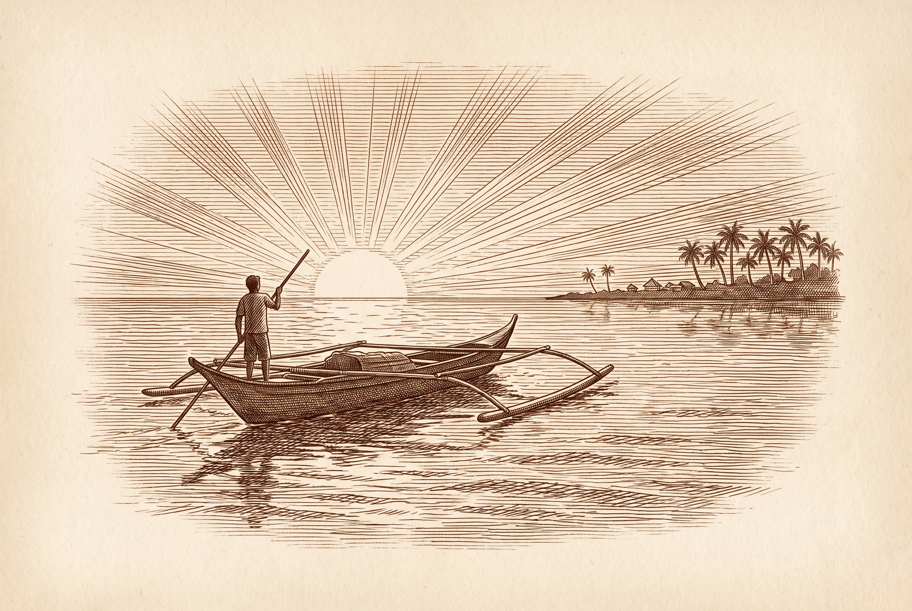
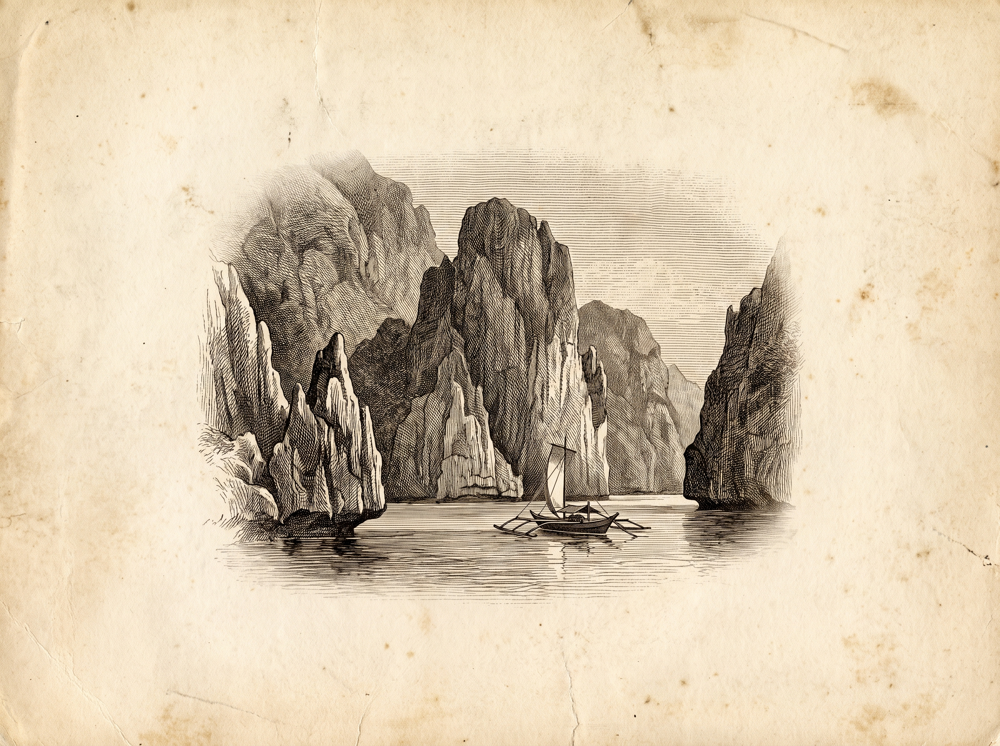

A few days either side of the wedding is worth it. Here is what is close enough to do on foot, what is worth a short ride, and what is worth extending the trip for.

All within a 15 minute walk of San Agustin Church.
The old Spanish citadel, gardens, dungeons, river views, and the Rizal Shrine inside, marking Jose Rizal’s final days before his execution. Allow 1 to 2 hours.
Open 8am to 10pm weekdays, 6am to 10pm weekends. Entrance about ₱75.
A restored ilustrado era townhouse, furnished as an affluent Filipino household would have looked under late Spanish rule.
Open Tuesday to Sunday, 9am to 6pm, closed Monday. Entrance about ₱75.
The convent museum beside the church itself, religious art, vestments, and choir stalls from the monastery’s working life.
Opens 9am daily. Entrance about ₱200.
A short walk beyond the walls. The National Museum complex is free entry and worth half a day alone, Rizal Park next door is the green heart of old Manila, good for an early morning walk before the heat sets in.
The modern city, shopping, bars, and a change of pace from the old one.
Greenbelt in Makati is the easy, walkable option, gardens, mid range to luxury boutiques, restaurants around every corner. Bonifacio High Street in BGC does the same thing outdoors, a kilometre long open air strip of shops, cafes, and bars. SM Aura and Uptown Mall cover the bigger department store style shopping if you need it.
Makati and BGC are where to go after dark, each a taxi or Grab ride from the Diamond. In Makati, Salcedo Village and the Ayala Triangle area are the polished end of the evening, and Good Morning Wines in Salcedo Village is a Japanese wine bar, a quiet place to start. In BGC, Bonifacio High Street and the Fort Strip lean towards cocktail bars and later clubs. No Entry is an underground speakeasy and supper club with live jazz, and The Back Room is a 1920s style speakeasy.

Adobo (chicken or pork, braised in vinegar and soy), kare-kare (oxtail in peanut sauce), sisig (sizzling chopped pork, a bar food classic), lechon (whole roast pig, the centrepiece of any real celebration), and halo-halo for dessert, shaved ice, sweet beans, leche flan, and ube layered together.
The Michelin starred rooms book out, so reserve well ahead for April.
For the lager drinkers, San Miguel Pale Pilsen is the national beer, and San Miguel Light is its lighter sibling. Both come in at 5 percent, the same as a standard Australian lager, so order either one at any bar or restaurant and drink it ice cold, the way it is served here.

If you have the extra days, the islands are the reason to take them.

El Nido, limestone cliffs, hidden lagoons, and island hopping tours labelled simply A, B, C and D, each covering a different set of islands, lagoons and beaches. Tour A takes in the Big and Secret Lagoons, Tour C the well known Secret Beach and Hidden Beach. Lunch, water, and snorkel gear are included on every tour.
Coron, further north, built around Kayangan Lake, regularly called one of the cleanest lakes in Asia, plus WWII Japanese shipwreck diving and snorkelling.
Puerto Princesa, the Subterranean River, a UNESCO World Heritage site, a 45 minute boat ride through a cave system, booked as a half day tour from the city.
Getting there: fly into Puerto Princesa for the underground river and the van connection to El Nido (5 to 6 hours by road), or direct to El Nido’s own airstrip. Note that as of March 2026 direct El Nido flights operate from Clark, north of Manila, not from NAIA, worth checking current routing before booking.
Watch before you plan
Planning the days around the wedding? See the sample itineraries on the Travel page.
White Beach, powder soft sand, and Puka Beach on the quieter northern tip. Island hopping tours stop at Crystal Cove and Puka Beach with snorkelling along the way, sunset paraw sailing on a traditional outrigger boat is worth doing at least once.
Getting there: fly into Caticlan (closest, then a short boat crossing) or Kalibo (cheaper fares, longer transfer). Best November to May, the dry Amihan season, calm seas and clear water.
Cebu (old churches and whale sharks) and Siargao (surf and lagoons) are both worth a look if Palawan or Boracay do not fit your dates, ask and we are happy to point you the right way based on what you are after.